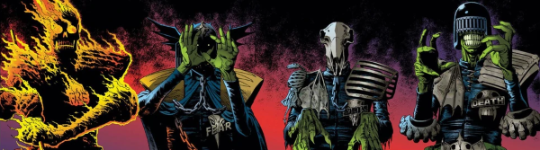

Judge Death (an evil version of Dredd from another dimension) was an idea so good that when they brought it back (in Judge Death Lives) they had him being rescued by his comrades Fear, Fire and Mortis. Necropolis introduced the idea that the Sisters of Death were something of a power behind the throne, providing the dark magics needed to create the Dark Judges in the first place.
Not included in this listing, the modern Deadworld saga reimagines the mythology to some extent, providing more of an organic horror in place of the clean gothic symbolism of the originals (although the lines get muddied in the modern Megazine series, especially as Judge Fear becomes a more rounded threat).
Art by Brian Bolland
| Story Title | Parts | Pages | w indicates a wraparound coverCovers | Year(s) | Issues | Writer | Artist | Colourist | Letterer |
|---|---|---|---|---|---|---|---|---|---|
From Judge DreddJudge Death Lives | 5 | 32 | 224: Brian Bolland 225: Brian Bolland 2 | 1981 | 224-228 | Alan Grant John Wagnervarious | Brian Bolland | pp1‑2 colour in each episode. Episodes lengths: 7, 6, 6, 6, 7 <-- | Tom Frame |
From Anderson Psi Division In‑page title seems to be: "Revenge". Featuring Psi‑Judge Omar.[Four Dark Judges] | 12 | 61 | 418: Robin Smith 419: Kevin O'Neill 423: Cliff Robinson 427: Robin Smith 4 | 1985 | 416-427 | Alan Grant John Wagnervarious | Brett Ewins: 1‑7 Cliff Robinson: 8‑10, 12 Robin Smith: 11 various | [b&w] | Tom Frame |
From Judge Dredd A choose‑your‑own‑adventure comic.You Are Judge Dredd in House of Death | 1 | 20 | 0 | 1986 | Reprints: X1DM1 | Script: Alan Grant, John Wagner Game: Pat Mills various | Bryan Talbot | [b&w] | Tom Frame |
From Judge DreddTale of the Dead Man | 7 | 54 | 662: Steve Cook 668: Jeff Anderson 2 | 1990 | 662-668 | John Wagner | Will Simpson: 1‑4 Jeff Anderson: 5‑7 various | <-- | Tom Frame |
From Judge Dredd | Countdown to NecropolisDear Annie | 2 | 13 | 673: Carlos Ezquerra 1 | 1990 | Reprints: M3.20672-673 | John Wagner | Carlos Ezquerra | <-- | Tom Frame |
From Judge DreddNecropolis | 26 | 174 | 674: Carlos Ezquerra 685: Carlos Ezquerra 690: David Hine 691: Mick Austin 693: Mike Hadley 696: Steve Yeowell 699: Dermot Power 7 | 1990 | Reprints: M3.21‑M3.35674-699 | John Wagner | Carlos Ezquerra | <-- | Tom Frame |
From Young DeathThe Boyhood of a Superfiend | 12 | 79 | M1.03: Duncan Fegredo M1.12: Peter Doherty 2 | 1990-1991 | M1.01-1.12 | listed as Brian Skuter (a character in the story) John Wagner | Peter Doherty | <-- | Gordon Robson: 1‑6, 9 Ellie De Ville: 7‑8 Steve Potter: 10‑12 various |
From Judge Death No supertitle.Masque of the Judge, Death | 1 | 10 | 1 | 1991 | JDMS4 | Dean Ormston Si Spencervarious | John McCrea | [b&w] | John McCrea |
From Plagues of Necropolis Featuring Judge Fear & Judge Mortis.Sleeping Enemy | 1 | 7 | Jason Brashill 1 | 1995 | Reprints: M355 (supplement)M2.78 | Si Spencer | Jim O'Ready | <-- | Gordon Robson |
From Plagues of NecropolisThat Perfect Skin | 1 | 7 | 0 | 1995 | Reprints: M355 (supplement)M2.80 | Si Spencer | Simon Davis | <-- | Gordon Robson |
From Plagues of NecropolisThe Reign of Fear | 1 | 7 | 0 | 1995 | Reprints: M355 (supplement)M2.81 | Si Spencer | Stuart Mack | <-- | Gordon Robson |
From Judge DreddDead Reckoning | 7 | + 1 credit pages42 | 1003: Simon Davis 1006: Greg Staples 2 | 1996 | Reprints: X11000-1006 | John Wagner | Greg Staples | <-- | Tom Frame |
From Batman / Judge DreddDie Laughing, Book 1 | ~ | 46 | Glenn Fabry 1 | 1998 | DC, Fleetway | Alan Grant John Wagnervarious | Glenn Fabry: 1‑46 Jason Brashill: 36‑45 Jim Murray: 36‑45 various | <-- | Ellie de Ville |
From Batman / Judge DreddDie Laughing, Book 2 | ~ | 46 | Jim Murray 1w | 1998 | DC, Fleetway | Alan Grant John Wagnervarious | Jim Murray | <-- | Ellie de Ville |
From Anderson Psi Division Specifically features pre‑Judge Fire as "Fuego".Half-Life | 4 | 48 | 217: Arthur Ranson 1 | 2003-2004 | M214-M217 | Alan Grant Tony Lukevarious | Arthur Ranson | <-- | Annie Parkhouse |
From Judge Dredd Featuring Placebo.Placebo | 1 | 6 | John McCrea 1 | 2004 | 1405-S | Rufus Dog | John McCrea | Angus McKie | Simon Parr |
From Judge Dredd Main subtitle: "Day of Chaos".Eve of Destruction | 20 | 120 | 1768: Ben Willsher 1770: Leigh Gallagher 1776: Chris Weston 1781: Henry Flint 1783: Karl Richardson 5 | 2012 | 1765-1784 | John Wagner | Henry Flint: 1‑5, 11‑16 Ben Willsher: 6‑10 Colin MacNeil: 17‑20 various | Chris Blythe | Annie Parkhouse |
From Judge Dredd Main subtitle: "Day of Chaos". Full title: "Wot I Did During the Worst Disaster in Mega‑City History".Wot I Did During... | 1 | 6 | 0 | 2012 | 1786 | John Wagner | Henry Flint | Chris Blythe | Annie Parkhouse |
From Judge DreddDark Justice | 11 | 66 | p2015: Greg Staples [thematic wraparound] 1915: Greg Staples 1921: Greg Staples [wraparound] 2,1w | 2014-2015 | Reprints: http://goo.gl/mgqoWw p2015, 1912-1921 | John Wagner | Greg Staples | <-- | Annie Parkhouse |
Linked to Judge Death No on‑page supertitle.Dominion | 6 | 60 | M386: Nick Percival M389: Nick Percival [w] 1,1w | 2017 | M386-M391 | John Wagner | Nick Percival | <-- | Annie Parkhouse |
Linked to Judge Death No on‑page supertitle.The Torture Garden | 10 | 100 | M401: Nick Percival [w] M405: Nick Percival M409: Nick Percival [w] 1,2w | 2018-2019 | M400-M409 | David Hine | Nick Percival | <-- | Annie Parkhouse |
Linked to Judge Death No on‑page supertitle.Deliverance | 10 | 100 | 425 [w]: Nick Percival 427 [w]: Nick Percival 430: Nick Percival 433: [w]: Nick Percival 3w,1 | 2020-2021 | M424-M433 | David Hine | Nick Percival | <-- | Annie Parkhouse |
| >> Posters / Teasers << | |||||||||
| Judge Fire | 1 | 1 | 0 | 1988 | 555 | n/a | Garry Leach | <-- | n/a |
| Judge Fear | 1 | 1 | 0 | 1988 | 556 | n/a | Garry Leach | <-- | n/a |
| Judge Mortis | 1 | 1 | 0 | 1988 | 557 | n/a | Garry Leach | <-- | n/a |
Linked to Judge DeathJudge Death | 1 | 1 | 0 | 1988 | 558 | n/a | Garry Leach | <-- | n/a |
Linked to Judge Death M2.78 cover reprint.Gallery of Death | 1 | 1 | 0 | 1997 | M3.35 | n/a | Jason Brashill | <-- | n/a |
Linked to Judge Death Reprint.Gallery of Death | 1 | 1 | 0 | 1997 | M3.35 | n/a | Dean Ormston | <-- | n/a |
Linked to Judge Death Reprint of prog 226.The Crime is Life: The Sentence is Death | 1 | 2 | 0 | 2003 | X1 | n/a | Brian Bolland | Adrian Salmon | n/a |
Dark Justice teaser.Death: 2013 | 1 | 1 | 0 | 2012 | Reprints: 1908 M354 WS9 FCBD3 p2013 | n/a | Greg Staples | <-- | n/a |
Star Scan.[Mortis & Fire] | 1 | 1 | 0 | 2014 | p2015 | n/a | [Godmachine] | [b&w] | n/a |
Subtitled: "Dark Justice Was Sssimply the Beginning...".Dominion | 1 | 1 | 0 | 2017 | Reprints: M3822019 | John Wagner | Nick Percival | <-- | n/a |
From Judge Dredd Star Scan.[Dredd, Anderson & the Dark Judges] | 1 | 1 | 0 | 2020 | 2206R | n/a | Vivian Truong | <-- | n/a |
| >> Floating Covers << | |||||||||
Linked to Judge Death Subtitled: "Judge Dredd: Dredd vs Death".Extreme Edition 01 | ~ | ~ | 1w | 2003 | X1 | n/a | Jock | Chris Blythe | n/a |
| >> Features << | |||||||||
From Judge Dredd Gatefold cover poster.Necropolis: The Bitter Ending! | ~ | ~ | 1w | 1997 | M3.35 | n/a | Jim Murray | <-- | n/a |
Linked to Judge Death Promo for Dredd vs. Death game.You Are the Law! | 1 | 4 | 0 | 2003 | X1 | n/a | game screenshots | <-- | n/a |
Linked to Judge DeathThe Life of Death | 1 | 8 | 0 | 2003 | X1 | David Bishop | reprints | <-- | n/a |
| year | episodes | pages |
| 1979 | 0 | 0 |
| 1980 | 0 | 0 |
| 1981 | 5 | 32 |
| 1982 | 0 | 0 |
| 1983 | 0 | 0 |
| 1984 | 0 | 0 |
| 1985 | 12 | 61 |
| 1986 | 1 | 20 |
| 1987 | 0 | 0 |
| 1988 | 0 | 0 |
| 1989 | 0 | 0 |
| 1990 | 39 | 265 |
| 1991 | 9 | 65 |
| 1992 | 0 | 0 |
| 1993 | 0 | 0 |
| 1994 | 0 | 0 |
| 1995 | 3 | 21 |
| 1996 | 7 | 42 |
| 1997 | 0 | 0 |
| 1998 | 0 | 92 |
| 1999 | 0 | 0 |
| 2000 | 0 | 0 |
| 2001 | 0 | 0 |
| 2002 | 0 | 0 |
| 2003 | 1 | 12 |
| 2004 | 4 | 42 |
| 2005 | 0 | 0 |
| 2006 | 0 | 0 |
| 2007 | 0 | 0 |
| 2008 | 0 | 0 |
| 2009 | 0 | 0 |
| 2010 | 0 | 0 |
| 2011 | 0 | 0 |
| 2012 | 21 | 126 |
| 2013 | 0 | 0 |
| 2014 | 1 | 6 |
| 2015 | 10 | 60 |
| 2016 | 0 | 0 |
| 2017 | 6 | 60 |
| 2018 | 4 | 40 |
| 2019 | 6 | 60 |
| 2020 | 4 | 40 |
| 2021 | 6 | 60 |
Comic strip data (excludes other content):